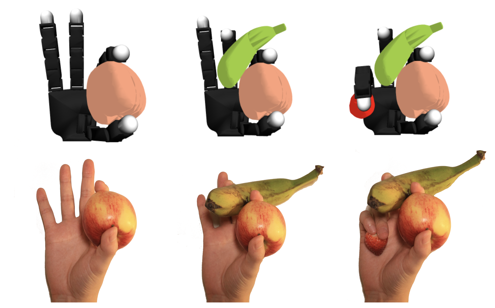
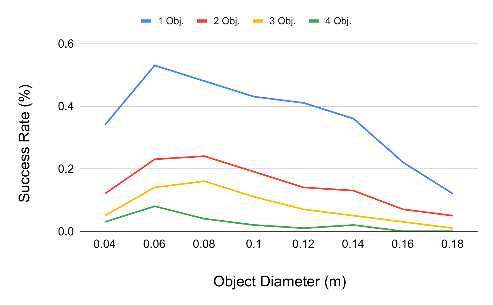

We introduce the sequential multi-object robotic grasp sampling algorithm SeqGrasp that can robustly synthesize stable grasps on diverse objects using the robotic hand's partial Degrees of Freedom (DoF). We use SeqGrasp to construct the large-scale Allegro Hand sequential grasping dataset SeqDataset and use it for training the diffusion-based sequential grasp generator SeqDiffuser. We experimentally evaluate SeqGrasp and SeqDiffuser against the state-of-the-art non-sequential multi-object grasp generation method MultiGrasp in simulation and on a real robot. The experimental results demonstrate that SeqGrasp and SeqDiffuser reach an 8.71%-43.33% higher grasp success rate than MultiGrasp. Furthermore, SeqDiffuser is approximately 1000 times faster at generating grasps than SeqGrasp and MultiGrasp.


@misc{lu2025graspinghandfulsequentialmultiobject,
title={Grasping a Handful: Sequential Multi-Object Dexterous Grasp Generation},
author={Haofei Lu and Yifei Dong and Zehang Weng and Florian Pokorny and Jens Lundell and Danica Kragic},
year={2025},
eprint={2503.22370},
archivePrefix={arXiv},
primaryClass={cs.RO},
url={https://arxiv.org/abs/2503.22370},
}
This work was supported by the Swedish Research Council, the Knut and Alice Wallenberg Foundation, the European Research Council (ERC-BIRD-884807). The authors also would like to express their sincere gratitude to Li Chen for valuable assistance with the experimental hardware and to Ning Zhou for contributing an RTX 3090 graphics card.